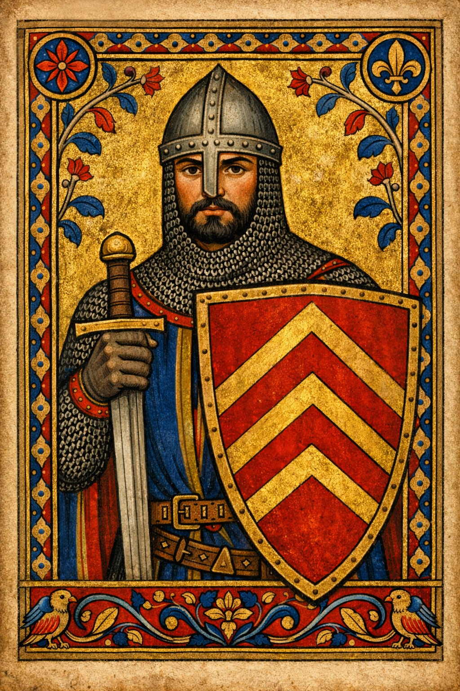

Ranulf de la Hale · c.1040–c.1099
Imagined · illuminated manuscript tradition
Imagined · illuminated manuscript tradition
Ranulf de la Hale
c. 1040 – c. 1099 · Era I · Norman Arrival
Norman soldier who crossed with William the Conqueror in 1066. Given Halecroft in Worcestershire by royal writ. Found himself in a yard in an unfamiliar country with a language he could not speak and a people he did not understand. He asked his priest to help him frame the right question before he died.
"Ask for justice. Not mercy."
Voice narration · Era I
–:––